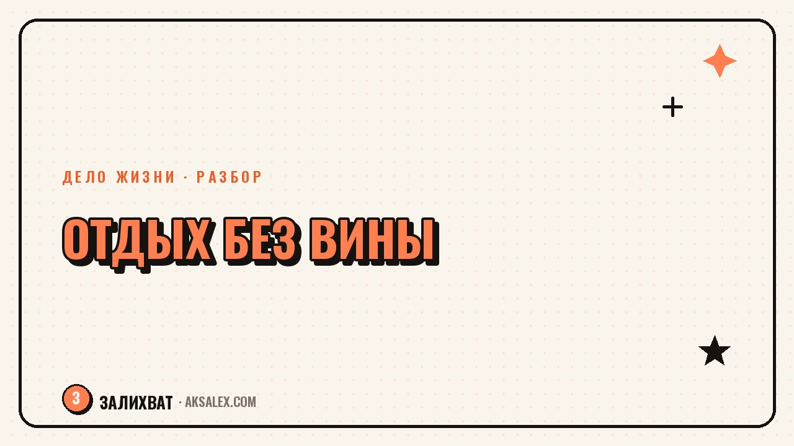

Как разрешить себе отдыхать без чувства вины

Ты наконец садишься отдохнуть - и первая мысль не про удовольствие, а про то, что надо бы доделать отчёт, разобрать почту или хотя бы полы помыть. Знакомо? Чувство вины за отдых - одна из самых частых вещей, которые мешают людям восстанавливаться, даже когда усталость уже заметна со стороны. Разберём, откуда это берётся и что реально помогает разрешить себе отдыхать без внутреннего суда.
Откуда берётся вина за отдых
Чаще всего это не личная особенность характера, а выученная установка. Если в детстве отдых разрешался только после того, как сделаны все дела - уроки, уборка, помощь по дому - мозг запоминает правило: сначала заслужи, потом расслабляйся. Во взрослой жизни это правило никуда не девается, просто дела становятся другими: работа, дом, дети, саморазвитие.
Второй источник - культ продуктивности, который сейчас буквально везде: в соцсетях, в разговорах коллег, в собственных ожиданиях от себя. Когда вокруг постоянно говорят про эффективность и личностный рост, отдых начинает казаться слабостью или потерей времени, хотя на деле он такая же часть работоспособности, как сон и еда.
Как это выглядит на практике
Ты смотришь сериал - и параллельно листаешь рабочий чат. Лежишь на диване - и мысленно составляешь список дел на завтра. Формально отдыхаешь, но тело и голова не расслабляются, потому что внимание занято виной, а не восстановлением. В итоге усталость накапливается, а отдых не выполняет свою функцию.
Почему отдых - это не роскошь, а необходимость
Мозг и тело восстанавливаются не во время рабочего рывка, а после него, когда нагрузка снижается. Если постоянно откладывать восстановление, рано или поздно организм забирает отдых силой - через болезнь, выгорание или просто резкое падение мотивации ко всему, что раньше радовало.
- Отдых восстанавливает концентрацию, которая снижается при постоянной нагрузке
- Без паузы творческие и рабочие задачи решаются медленнее, а не быстрее
- Хронический недоотдых повышает риск раздражительности и конфликтов
- Разрешённый отдых снижает тревожность лучше, чем отдых урывками с чувством вины
Важно понимать: отдых не должен быть заслуженным наградой за подвиги. Он нужен человеку просто потому, что он живой организм с ограниченным ресурсом, а не потому что он выполнил дневную норму дел.
Как начать разрешать себе отдыхать
Разрешение себе на отдых редко приходит само - это навык, который нужно тренировать маленькими шагами. Резко стать человеком, который спокойно отдыхает по часу в день, не получится, если раньше вина была привычной реакцией.
С чего начать
Начни с короткого и чётко ограниченного по времени отдыха - пятнадцать минут без телефона и без списка дел в голове. Короткий отрезок легче защитить от вины, чем целый свободный вечер, к которому пока нет привычки. Постепенно время можно увеличивать, когда ощущение вины начинает слабеть.
Отдых не нужно зарабатывать делами. Он такая же базовая потребность, как еда и сон, и относиться к нему стоит так же - без оправданий перед собой.
Полезно отдельно фиксировать для себя разницу между отдыхом и прокрастинацией. Прокрастинация - это избегание конкретной задачи с тревогой на фоне, отдых - осознанная пауза без вины. Если во время паузы ты продолжаешь мысленно переживать за недоделанное, это сигнал, что отдых пока не получился, и стоит честно признать: дело не в лени, а в непривычке отдыхать.
Что помогает закрепить привычку
Привычка закрепляется через повторение и через то, что ты замечаешь результат. Если после отдыха ты реально чувствуешь себя лучше и задачи решаются быстрее, мозг постепенно перестаёт воспринимать паузу как потерю времени.
- Планируй отдых заранее, как встречу в календаре - так его сложнее проигнорировать
- Отключай уведомления на время отдыха, а не просто откладывай телефон рядом
- Проговаривай себе вслух или письменно: сейчас время отдыха, дела подождут
- Замечай и записывай, как ты себя чувствуешь после качественного отдыха
- Не сравнивай свой отдых с чужой продуктивностью в соцсетях
Отдельно помогает разговор с собой в духе «что бы я сказал другу, который так же себя изводит из-за отдыха». Чужому человеку мы обычно легко говорим: отдохни, ты заслужил. Себе эту же фразу признать сложнее, но именно она и работает лучше всего.
Разные форматы отдыха и когда они нужны
Отдых не ограничивается сном - у усталости есть разные виды, и восстанавливать их нужно по-разному. Если весь день общался с людьми, нужен не сериал с диалогами, а тишина. Если целый день сидел без движения, нужна не ещё одна лежанка, а прогулка.
| Вид усталости | Что восстанавливает | Пример |
|---|---|---|
| Умственная | Переключение на простое действие без решений | Прогулка, готовка, уборка без спешки |
| Эмоциональная | Тишина и время без общения | Побыть одному, без разговоров и созвонов |
| Физическая | Сон и лёгкое движение | Ранний отход ко сну, растяжка, душ |
| От монотонности | Смена обстановки или деятельности | Выход на улицу, новое место, другое занятие |
Частые вопросы
Почему я чувствую вину, даже когда отдыхаю заслуженно?
Это выученная реакция, а не объективная оценка ситуации - мозг привык связывать отдых с условием «сначала дела». Разблокировать это получается через повторный опыт: небольшой отдых без последствий постепенно переучивает эту реакцию.
Как понять, что я не ленюсь, а действительно нуждаюсь в отдыхе?
Лень обычно связана с конкретной нелюбимой задачей и желанием её избежать, а усталость проявляется шире - снижается концентрация, терпение, интерес к привычным вещам. Если это ощущается на протяжении нескольких дней, речь скорее про усталость, а не про лень.
Сколько времени в день нужно выделять на отдых?
Универсального числа нет, важнее регулярность, чем длительность. Начать можно с пятнадцати-двадцати минут в день без дел и без телефона, и смотреть, как меняется самочувствие.
Что делать, если окружающие считают мой отдых ленью?
Чужие оценки не обязаны совпадать с твоими реальными потребностями в восстановлении. Можно спокойно объяснить, что отдых - часть продуктивности, а не её противоположность, но менять своё поведение под чужое мнение не стоит.
Как отдыхать, если список дел никогда не заканчивается?
Список дел по своей природе бесконечен, и ждать момента, когда он опустеет, можно всю жизнь. Решение - осознанно выделять время на отдых внутри этого бесконечного списка, а не ждать идеального момента, когда дел не останется.
Раз тема оказалась полезной, вот что почитать следующим. Нейросети для автомеханика: расшифровка ошибок, подсказки по ремонту и общение с клиентами.
Читать статью →а не вручную